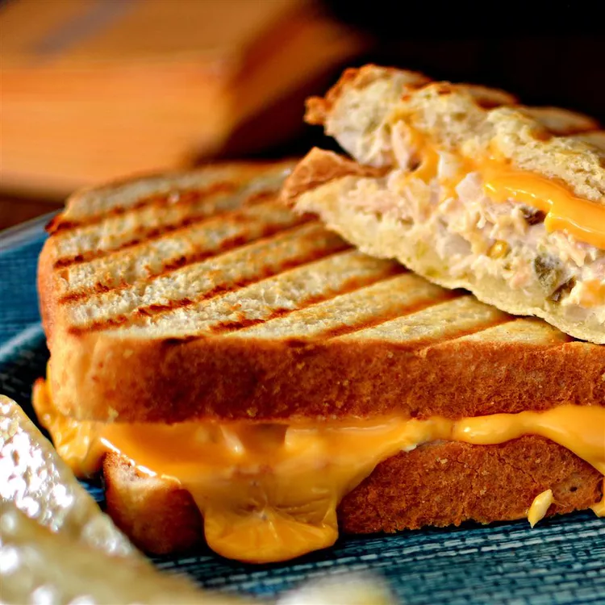

Tuna Panini Melt

Description
A new twist on an old standby.
Ingredients
- 1 (5 ounce) can solid white albacore tuna in water (such as Bumble Bee®)
- 1 tablespoon mayonnaise
- 1 tablespoon balsamic vinegar
- 1 tablespoon chopped onion
- 1 dill pickle, chopped
- 4 slices sourdough bread
- 2 slices American cheese
Steps
- Mix tuna, mayonnaise, balsamic vinegar, onion, and dill pickle together in a bowl.
- Spread tuna mixture over 2 slices of bread. Top with American cheese and remaining 2 slices of bread.
- Cook in a panini press until bread is crispy and cheese is melted, 3 to 4 minutes.